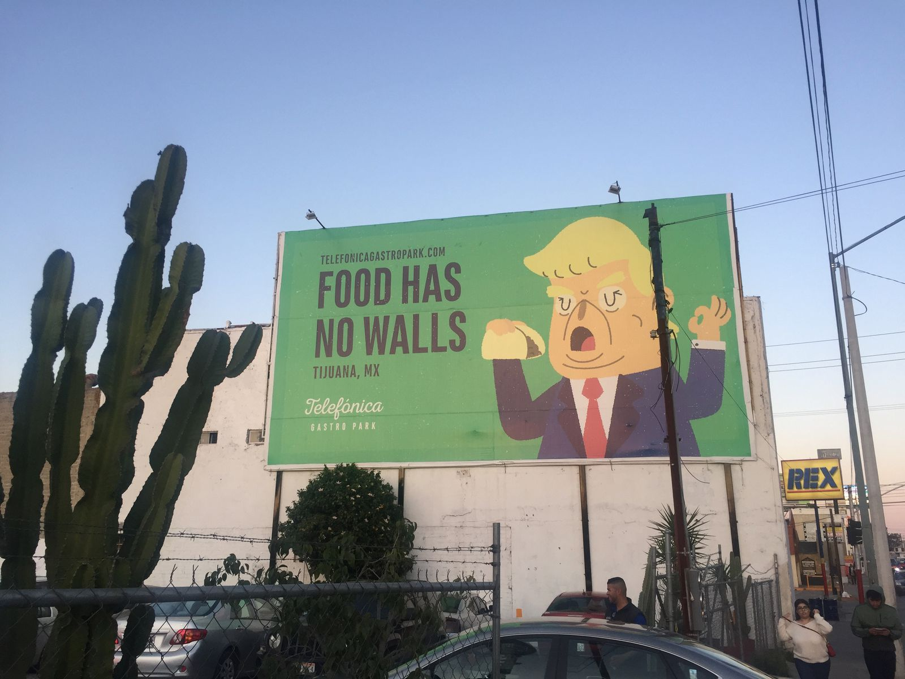
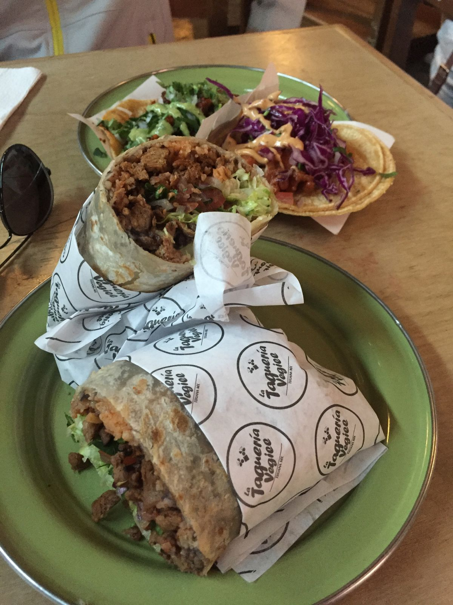
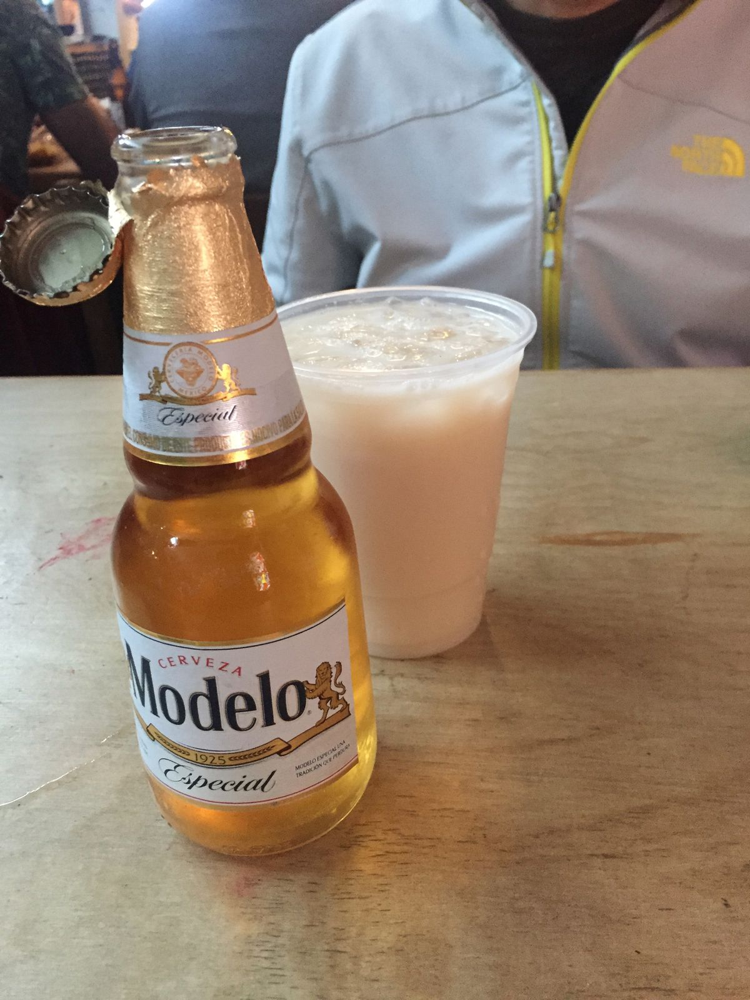
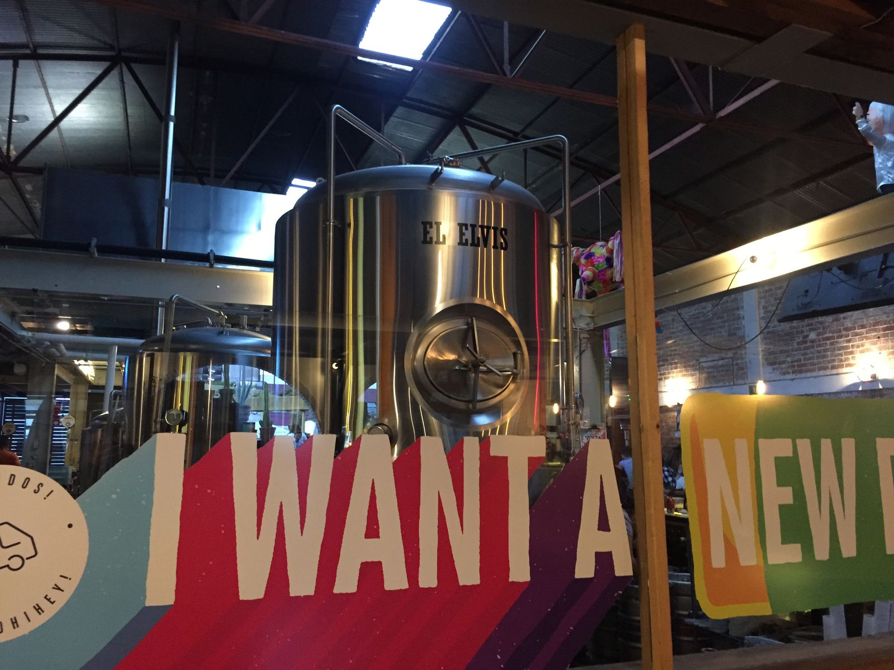
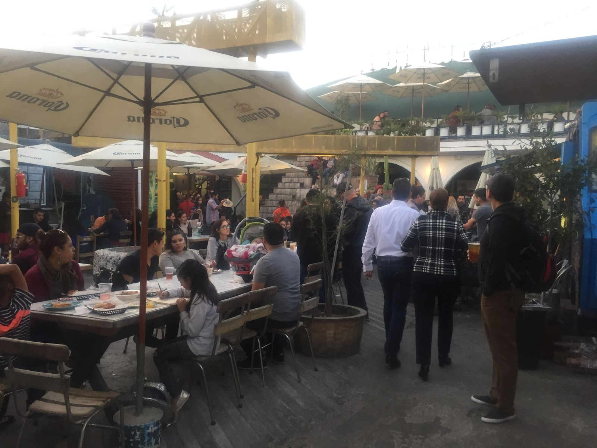
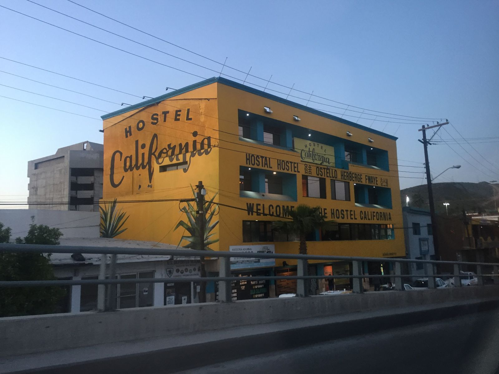
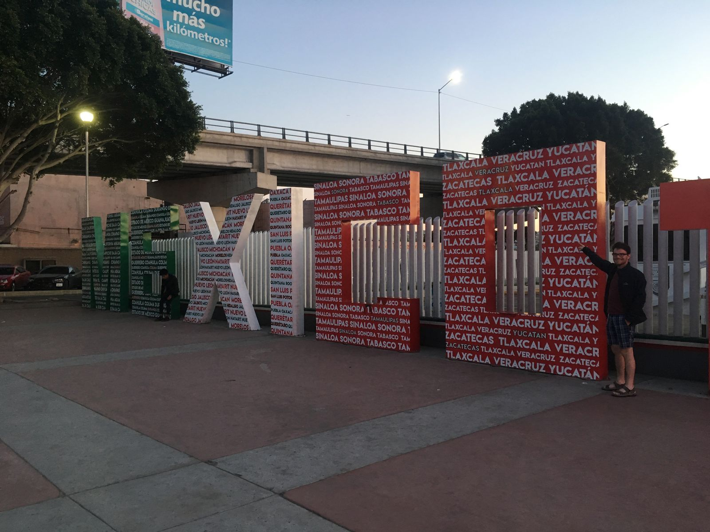

Dinner in Mexico
Being so close to the border, it's easy to cross into Mexico for a short time. As a result, Ankit and I decided to go to Tijuana for dinner. Right before the border is an outlet mall with ample parking. I'm told that just after Thanksgiving people visit from Mexico, buy out all the deals, and then sell everything for a huge profit in Mexico. It's pretty amusing and quintessentially American that the first thing you see when entering the US is a big shopping complex.

Crossing the border was a breeze. No one even looked at my passport. I guess they're not too worried about people crossing illegally into Mexico. Once there, we called an Uber and went to Telefónica Gastro Park, a cute outdoor beer garden with tons of food trucks. Locals were enjoying their Saturday night out at dinner, some families and friends at tables and couples at the bar.

Fake meat burrito 
Beer 
Where beer comes from
I don't speak any Spanish but it turned out not to be a big problem. Though the servers' English was limited, I could just point to things that I wanted. There was a vegetarian food truck, so I knew I'd be safe with anything on the menu. I got a delicious burrito with fake pork, guac, beans, lettuce, and cheese. I also got a beer, though I had no idea what I ordered until it showed up. Modelo Especial is pretty good.

While this gastro park had a rather American feel to it, what with the brewery and food trucks, it was pretty different from what we saw of Tijuana on the ride there. Though we were just a few miles across the border, it felt like a different world. Most cars had some cosmetic damage, roads were dirtier, almost every storefront had steel rollup gates. Beyond the Spanish speakers and use of pesos, it was clear that I was no longer in the US.

Returning to the US proved almost as easy as entering Mexico, much to my surprise. The line at passport control was maybe 5 to 10 minutes, but with Global Entry, Ankit and I could just cut to the front. The border agent asked me where I was going (San Diego) and whether I wanted to declare anything (no), and he let me through in about 10 seconds. Then we were back in the land of freedom, immediately greeted by Panda Express and Carl's Junior at the shopping center.
